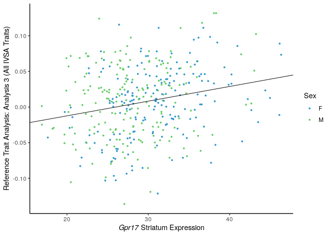

Last updated: 2022-03-18
Checks: 7 0
Knit directory: rta/
This reproducible R Markdown analysis was created with workflowr (version 1.7.0). The Checks tab describes the reproducibility checks that were applied when the results were created. The Past versions tab lists the development history.
Great! Since the R Markdown file has been committed to the Git repository, you know the exact version of the code that produced these results.
Great job! The global environment was empty. Objects defined in the global environment can affect the analysis in your R Markdown file in unknown ways. For reproduciblity it’s best to always run the code in an empty environment.
The command set.seed(20200501) was run prior to running the code in the R Markdown file. Setting a seed ensures that any results that rely on randomness, e.g. subsampling or permutations, are reproducible.
Great job! Recording the operating system, R version, and package versions is critical for reproducibility.
Nice! There were no cached chunks for this analysis, so you can be confident that you successfully produced the results during this run.
Great job! Using relative paths to the files within your workflowr project makes it easier to run your code on other machines.
Great! You are using Git for version control. Tracking code development and connecting the code version to the results is critical for reproducibility.
The results in this page were generated with repository version 4c82da7. See the Past versions tab to see a history of the changes made to the R Markdown and HTML files.
Note that you need to be careful to ensure that all relevant files for the analysis have been committed to Git prior to generating the results (you can use wflow_publish or wflow_git_commit). workflowr only checks the R Markdown file, but you know if there are other scripts or data files that it depends on. Below is the status of the Git repository when the results were generated:
Ignored files:
Ignored: .Rhistory
Ignored: .Rproj.user/
Ignored: code/.Rapp.history
Ignored: data/.Rhistory
Ignored: data/RDS/
Ignored: run/
Untracked files:
Untracked: LICENSE
Untracked: Untitled.R
Untracked: analysis/17_mapping_interpretation_old.Rmd
Untracked: analysis/temp.txt
Untracked: code/DO_eQTL_perms.R
Untracked: code/DO_eQTL_score_calc.R
Untracked: code/STAR_RSEM_416.sh
Untracked: code/eQTL_plotting_DO_striatum_416.R
Untracked: code/ggplot_pub_themes.R
Untracked: data/20_elastic_mv_results.csv
Untracked: data/20_elasticnet_predictions.RDS
Untracked: data/DO_416_DGEList.RDS
Untracked: data/DO_416_DGEList_unfiltered (michael.saul@jax.org 2).RDS
Untracked: data/DO_416_DGEList_unfiltered (michael.saul@jax.org 3).RDS
Untracked: data/DO_416_DGEList_unfiltered (michael.saul@jax.org 4).RDS
Untracked: data/DO_416_DGEList_unfiltered (michael.saul@jax.org).RDS
Untracked: data/DO_416_DGEList_unfiltered.RDS
Untracked: data/DO_416_ERCC_DGEList.RDS
Untracked: data/DO_416_ERCC_cpm.RDS
Untracked: data/DO_416_normrt.RDS
Untracked: data/DO_416_pheno.RDS
Untracked: data/DO_416_pheno_allgenes.RDS
Untracked: data/DO_416_voom (michael.saul@jax.org).RDS
Untracked: data/DO_416_voom.RDS
Untracked: data/DO_416_voom_allgenes (michael.saul@jax.org 2).RDS
Untracked: data/DO_416_voom_allgenes (michael.saul@jax.org).RDS
Untracked: data/DO_416_voom_allgenes.RDS
Untracked: data/DO_416_voom_cpresiduals.RDS
Untracked: data/DO_AQ_active_CoV_toptable_annotated.RDS
Untracked: data/DO_AQ_lever_ratio_toptable_annotated.RDS
Untracked: data/DO_AQ_mean_inf_toptable_annotated.RDS
Untracked: data/DO_AQ_rate_toptable_annotated.RDS
Untracked: data/DO_IVSA_acquisition_cancor_df.RDS
Untracked: data/DO_IVSA_acquisition_logit_df.RDS
Untracked: data/DO_IVSA_acquisition_logit_glm.RDS
Untracked: data/DO_IVSA_all_cancor_df.RDS
Untracked: data/DO_IVSA_data.RDS
Untracked: data/DO_IVSA_novelty_cancor_ALL.RDS
Untracked: data/DO_IVSA_novelty_cancor_AQ.RDS
Untracked: data/DO_IVSA_novelty_data.RDS
Untracked: data/DO_IVSA_prediction_ACQUISITION_logit.RDS
Untracked: data/DO_IVSA_prediction_ACQUISITION_logit_2021-01-04.RDS
Untracked: data/DO_IVSA_prediction_ALL_cancor.RDS
Untracked: data/DO_IVSA_prediction_ALL_cancor_2021-01-04.RDS
Untracked: data/DO_IVSA_prediction_ALL_cancor_old.RDS
Untracked: data/DO_IVSA_prediction_AQ_cancor.RDS
Untracked: data/DO_IVSA_prediction_AQ_cancor_2021-01-04.RDS
Untracked: data/DO_IVSA_prediction_a1_ACQUISITION_logit.RDS
Untracked: data/DO_IVSA_prediction_a2_AQ_cancor.RDS
Untracked: data/DO_IVSA_prediction_a3_ALL_cancor.RDS
Untracked: data/DO_IVSA_prediction_a4_male_ALL_cancor.RDS
Untracked: data/DO_IVSA_prediction_a5_female_ALL_cancor.RDS
Untracked: data/DO_IVSA_raw_data.RDS
Untracked: data/DO_IVSA_transformed_data.RDS
Untracked: data/DO_LIMS_data.RDS
Untracked: data/DO_RTG_a1_new.qtl.RData
Untracked: data/DO_RTG_a1_new_1000x.qtlpermu.RData
Untracked: data/DO_RTG_a1_new_mapping_1000x.RData
Untracked: data/DO_RTG_a2_new.qtl.RData
Untracked: data/DO_RTG_a2_new_1000x.qtlpermu.RData
Untracked: data/DO_RTG_a2_new_mapping_1000x.RData
Untracked: data/DO_RTG_a3_new.qtl.RData
Untracked: data/DO_RTG_a3_new_1000x.qtlpermu.RData
Untracked: data/DO_RTG_a3_new_mapping_1000x_01.RData
Untracked: data/DO_RTG_a3_new_mapping_1000x_02.RData
Untracked: data/DO_RTG_a4_new.qtl.RData
Untracked: data/DO_RTG_a5_new.qtl.RData
Untracked: data/DO_RTG_elasticnet_new.qtl.RData
Untracked: data/DO_RTG_elasticnet_new_mapping_1000x.RData
Untracked: data/DO_RTG_project_df_for_mapping.RDS
Untracked: data/DO_RTG_project_df_for_mapping_2020-11-06.RDS
Untracked: data/DO_RTG_project_df_for_mapping_a2.RDS
Untracked: data/DO_RTG_project_df_for_mapping_sexspecific.RDS
Untracked: data/DO_cocaine_measures_data.RDS
Untracked: data/DO_demographic_data_df.RDS
Untracked: data/DO_eigengene_significance.RDS
Untracked: data/DO_eigengenes.RDS
Untracked: data/DO_elasticnet_GEX_pvalue_histograms.RData
Untracked: data/DO_highcor_cpresiduals_datatable.RDS
Untracked: data/DO_holeboard_data_df.RDS
Untracked: data/DO_holeboard_summarized.RDS
Untracked: data/DO_lightdark_data_df.RDS
Untracked: data/DO_mQTL_peaks.RDS
Untracked: data/DO_mQTL_scan1s.RDS
Untracked: data/DO_module_membership.RDS
Untracked: data/DO_novelplace_data_df.RDS
Untracked: data/DO_novelty_COC_cancor.RDS
Untracked: data/DO_novelty_SAL_cancor.RDS
Untracked: data/DO_novelty_data.RDS
Untracked: data/DO_novelty_response_data.RDS
Untracked: data/DO_novelty_response_data_for_RTG.RDS
Untracked: data/DO_novelty_response_data_with_transform.csv
Untracked: data/DO_novelty_saline_cocaine_cancor.RDS
Untracked: data/DO_openfield_data_df.RDS
Untracked: data/DO_paraclique_data.el
Untracked: data/DO_paraclique_eigengenes.RDS
Untracked: data/DO_paraclique_significance_elasticnet.RDS
Untracked: data/DO_paracliques.RDS
Untracked: data/DO_paracliques_significance.RDS
Untracked: data/DO_ploidy_calls.RDS
Untracked: data/DO_pmap.RDS
Untracked: data/DO_pvalue_histograms.RData
Untracked: data/DO_rtg_a1_toptable_annotated.RDS
Untracked: data/DO_rtg_a2_toptable_annotated.RDS
Untracked: data/DO_rtg_a3_toptable_annotated.RDS
Untracked: data/DO_rtg_m1_toptable_annotated.RDS
Untracked: data/DO_rtg_m2_toptable_annotated.RDS
Untracked: data/DO_rtg_m3_toptable_annotated.RDS
Untracked: data/DO_saline.qtl.RData
Untracked: data/DO_saline_measures_data.RDS
Untracked: data/DO_sensi_cocaine.qtl.RData
Untracked: data/DO_str_2016_eQTL.RData
Untracked: data/DO_str_2016_gm4qtl2.zip
Untracked: data/DO_str_2016_gm4qtl2_intensities.fst
Untracked: data/DO_voom_cpresiduals_NArm.RDS
Untracked: data/DO_wgcna.RDS
Untracked: data/IVSA_RTG_a3_blup.pdf
Untracked: data/IVSA_h2_2019-11-18.tsv
Untracked: data/IVSA_metadata_sheet.RDS
Untracked: data/ME16_edges.tsv
Untracked: data/Mus_musculus.GRCm38.94.parsed.RDS
Untracked: data/Paraclique_19_MF_AMIGO.txt
Untracked: data/RTG_QTL_peaks.RDS
Untracked: data/RTG_figure.RDS
Untracked: data/SENS_RTG/
Untracked: data/Tyr2_genotypes.RDS
Untracked: data/Tyr_genotypes.RDS
Untracked: data/blup_chr7_DO_RTG_a3.RDS
Untracked: data/cc_variants/
Untracked: data/chr18_QTL_results.RDS
Untracked: data/chr4_QTL_results.RDS
Untracked: data/chr7_a3_QTL_results.RDS
Untracked: data/cis/
Untracked: data/eQTL_annotated_peaks.RDS
Untracked: data/eQTL_plots.RData
Untracked: data/figures/
Untracked: data/founders_key/
Untracked: data/gigamuga/
Untracked: data/gwas/
Untracked: data/info/
Untracked: data/m2G.a2.RTG.chr4snp.RData
Untracked: data/mapping/
Untracked: data/mapping_from_hao/
Untracked: data/mpd_measures_saline.txt
Untracked: data/mpd_measures_saline_cocaine.txt
Untracked: data/perms/
Untracked: data/qtl2/
Untracked: data/raw/
Untracked: data/resources/
Untracked: data/tads_loops/
Untracked: data/transcripts/
Untracked: data/variants/
Untracked: logs/
Untracked: new_RTG_a3.jpeg
Untracked: output/RTG_out/
Untracked: output/docs_backup_2020-07-30.tar.gz
Untracked: output/elastic_net_out/
Untracked: rstudio_rta.sif
Untracked: singularity/
Untracked: tmp/
Untracked: var/
Unstaged changes:
Deleted: .Rprofile
Modified: .gitignore
Modified: README.md
Modified: analysis/_site.yml
Note that any generated files, e.g. HTML, png, CSS, etc., are not included in this status report because it is ok for generated content to have uncommitted changes.
These are the previous versions of the repository in which changes were made to the R Markdown (analysis/14_DO_expression_interpretation.Rmd) and HTML (docs/14_DO_expression_interpretation.html) files. If you’ve configured a remote Git repository (see ?wflow_git_remote), click on the hyperlinks in the table below to view the files as they were in that past version.
| File | Version | Author | Date | Message |
|---|---|---|---|---|
| Rmd | 4c82da7 | Michael C. Saul | 2022-03-18 | Committing change to RTG a3 |
| html | 839203c | Michael C. Saul | 2022-03-18 | Build site. |
| Rmd | 4cb1fff | Michael C. Saul | 2022-03-18 | Committing reanalysis with voom+limma results |
| html | e97cdd4 | Michael C. Saul | 2021-12-08 | Build site. |
| html | f1a42cd | Michael C. Saul | 2021-02-09 | Build site. |
| html | 105a158 | Michael C. Saul | 2021-01-18 | Build site. |
| html | b08bb0d | Michael C. Saul | 2021-01-06 | Build site. |
| Rmd | b8a72a4 | Michael C. Saul | 2021-01-06 | Redoing with 0.10 q-value |
| html | 039a0fc | Michael C. Saul | 2021-01-06 | Build site. |
| html | a2d9eb7 | Michael C. Saul | 2021-01-05 | Build site. |
| html | 799f0c2 | Michael C. Saul | 2021-01-04 | Build site. |
| Rmd | 19671a8 | Michael C. Saul | 2021-01-04 | Reworking interpretation script to match newest canonical correlation |
| Rmd | 2e38c65 | Michael C. Saul | 2020-07-30 | Rolling back to working version. |
| html | 2e38c65 | Michael C. Saul | 2020-07-30 | Rolling back to working version. |
| html | 3e0a790 | Michael C. Saul | 2020-06-03 | Build site. |
| Rmd | 7e500b3 | Michael C. Saul | 2020-06-03 | Tweak of gene interpretation |
| html | d9b0ff7 | Michael C. Saul | 2020-06-03 | Build site. |
| Rmd | d0a7353 | Michael C. Saul | 2020-06-03 | Initial commit of gene interpretation |
This script is used to correlate RTG calculated traits to expression.
Calling R libraries necessary for this analysis.
library("limma")
library("edgeR")
library("ggplot2")
library("biomaRt")
library("statmod")
library("qvalue")source("./code/ggplot_pub_themes.R")norm_rank_transform() functionGetting a normal rank transformation function that can handle NA values.
norm_rank_transform = function(x, c = (0)) {
stopifnot(is.numeric(x) & is.vector(x))
x_noNA = which(!is.na(x))
N = length(x_noNA)
x[x_noNA] = qnorm((rank(x[x_noNA], ties.method = "average") - c) / (N - (2 * c) + 1))
return(x)
}Importing data.
DO_pheno = readRDS("./data/DO_416_pheno.RDS")
DO_dge = readRDS("./data/DO_416_DGEList.RDS")
DO_RTG_analysis_1 = readRDS("./data/DO_IVSA_prediction_a1_ACQUISITION_logit.RDS")
DO_RTG_analysis_2 = readRDS("./data/DO_IVSA_prediction_a2_AQ_cancor.RDS")
DO_RTG_analysis_3 = readRDS("./data/DO_IVSA_prediction_a3_ALL_cancor.RDS")
DO_pheno$RTG_a1 = DO_RTG_analysis_1[row.names(DO_pheno)]
DO_pheno$RTG_a2 = DO_RTG_analysis_2[row.names(DO_pheno),"IVSA_novelty_cancor"]
DO_pheno$RTG_a3 = DO_RTG_analysis_3[row.names(DO_pheno),"IVSA_novelty_cancor"]
has_RTG_a1_express = row.names(DO_pheno[which((!is.na(DO_pheno[,"RTG_a1"])) & (DO_pheno$Sex == "M" | DO_pheno$Sex == "F")),])
has_RTG_a2_express = row.names(DO_pheno[which((!is.na(DO_pheno[,"RTG_a2"])) & (DO_pheno$Sex == "M" | DO_pheno$Sex == "F")),])
has_RTG_a3_express = row.names(DO_pheno[which((!is.na(DO_pheno[,"RTG_a3"])) & (DO_pheno$Sex == "M" | DO_pheno$Sex == "F")),])Getting top tables for RTG analyses 1-3.
DO_RTG_a1_toptable = readRDS("./data/DO_rtg_a1_toptable_annotated.RDS")
DO_RTG_a2_toptable = readRDS("./data/DO_rtg_a2_toptable_annotated.RDS")
DO_RTG_a3_toptable = readRDS("./data/DO_rtg_a3_toptable_annotated.RDS")Looking at top genes in analyses 1-3.
DO_RTG_a1_toptable[which(DO_RTG_a1_toptable$qvalue < 0.1),]DO_RTG_a2_toptable[which(DO_RTG_a2_toptable$qvalue < 0.1),]DO_RTG_a3_toptable[which(DO_RTG_a3_toptable$qvalue < 0.1),]Particularly interesting genes from this perspective include Gpr17, which is significant in both analysis 1 and analysis 2. Because the interpretation of analysis 1 is the most straightforward, plotting the correlation of Gpr17 expression and analysis 1.
Gpr17_ensembl_id = "ENSMUSG00000052229"
DO_pheno$Gpr17 = cpm(DO_dge)[Gpr17_ensembl_id,row.names(DO_pheno)]
Gpr17_lm = lm(RTG_a3 ~ Gpr17, data = DO_pheno[has_RTG_a3_express,])
Gpr17_cor = cor(DO_pheno[has_RTG_a1_express,"Gpr17"],
DO_pheno[has_RTG_a1_express,"RTG_a3"])
Gpr17_xlab_title = expression(paste(italic("Gpr17"), " Striatum Expression", sep = ""))
Gpr17_bivariate_plot = ggplot(data = DO_pheno[has_RTG_a3_express,], aes(x = Gpr17, y = RTG_a3, color = Sex)) +
geom_point(size = pt_to_mm * 2) +
scale_color_manual(values = c("#3399CC","#66CC66")) +
geom_abline(aes(intercept = Gpr17_lm$coefficients[1],
slope = Gpr17_lm$coefficients[2]),
color = "#000000", size = (pt_to_mm * 1)) +
ylab("Reference Trait Analysis: Analysis 3 (All IVSA Traits)") +
xlab(Gpr17_xlab_title) +
theme_classic()
Gpr17_bivariate_plot
| Version | Author | Date |
|---|---|---|
| e97cdd4 | Michael C. Saul | 2021-12-08 |
| 799f0c2 | Michael C. Saul | 2021-01-04 |
| 2e38c65 | Michael C. Saul | 2020-07-30 |
| d9b0ff7 | Michael C. Saul | 2020-06-03 |
Saving the Gpr17 bivariate plot.
ggsave(file = "./data/figures/Gpr17_bivariate_a1_plot.pdf",
plot = Gpr17_bivariate_plot + pubtheme_classic,
width = 3, height = 3, units = "in")a1_q_0p10 = DO_RTG_a1_toptable[which(DO_RTG_a1_toptable$qvalue < 0.10),"ensembl_gene_id"]
a2_q_0p10 = DO_RTG_a2_toptable[which(DO_RTG_a2_toptable$qvalue < 0.10),"ensembl_gene_id"]
a3_q_0p10 = DO_RTG_a3_toptable[which(DO_RTG_a3_toptable$qvalue < 0.10),"ensembl_gene_id"]
threeway_intersect_q_0p10 = intersect(intersect(a1_q_0p10,a2_q_0p10),a3_q_0p10)
DO_RTG_a3_toptable[threeway_intersect_q_0p10,]The output data are saved in ./data/.
This document was prepared using RMarkdown in RStudio.
sessionInfo()R version 4.1.2 (2021-11-01)
Platform: x86_64-pc-linux-gnu (64-bit)
Running under: Ubuntu 20.04.3 LTS
Matrix products: default
BLAS/LAPACK: /usr/lib/x86_64-linux-gnu/openblas-pthread/libopenblasp-r0.3.8.so
locale:
[1] LC_CTYPE=en_US.UTF-8 LC_NUMERIC=C
[3] LC_TIME=en_US.UTF-8 LC_COLLATE=en_US.UTF-8
[5] LC_MONETARY=en_US.UTF-8 LC_MESSAGES=en_US.UTF-8
[7] LC_PAPER=en_US.UTF-8 LC_NAME=C
[9] LC_ADDRESS=C LC_TELEPHONE=C
[11] LC_MEASUREMENT=en_US.UTF-8 LC_IDENTIFICATION=C
attached base packages:
[1] stats graphics grDevices utils datasets methods base
other attached packages:
[1] qvalue_2.26.0 statmod_1.4.36 biomaRt_2.50.2 ggplot2_3.3.5 edgeR_3.36.0
[6] limma_3.50.0
loaded via a namespace (and not attached):
[1] Biobase_2.54.0 httr_1.4.2 jsonlite_1.7.3
[4] splines_4.1.2 bit64_4.0.5 assertthat_0.2.1
[7] highr_0.9 stats4_4.1.2 BiocFileCache_2.2.1
[10] blob_1.2.2 GenomeInfoDbData_1.2.7 yaml_2.2.2
[13] progress_1.2.2 pillar_1.6.5 RSQLite_2.2.9
[16] lattice_0.20-45 glue_1.6.1 digest_0.6.29
[19] promises_1.2.0.1 XVector_0.34.0 colorspace_2.0-2
[22] cowplot_1.1.1 plyr_1.8.6 htmltools_0.5.2
[25] httpuv_1.6.5 XML_3.99-0.8 pkgconfig_2.0.3
[28] zlibbioc_1.40.0 purrr_0.3.4 scales_1.1.1
[31] whisker_0.4 later_1.3.0 git2r_0.29.0
[34] tibble_3.1.6 KEGGREST_1.34.0 farver_2.1.0
[37] generics_0.1.1 IRanges_2.28.0 ellipsis_0.3.2
[40] cachem_1.0.6 withr_2.4.3 BiocGenerics_0.40.0
[43] cli_3.1.1 magrittr_2.0.2 crayon_1.4.2
[46] memoise_2.0.1 evaluate_0.14 fs_1.5.2
[49] fansi_1.0.2 xml2_1.3.3 tools_4.1.2
[52] prettyunits_1.1.1 hms_1.1.1 lifecycle_1.0.1
[55] stringr_1.4.0 S4Vectors_0.32.3 munsell_0.5.0
[58] locfit_1.5-9.4 AnnotationDbi_1.56.2 Biostrings_2.62.0
[61] compiler_4.1.2 jquerylib_0.1.4 GenomeInfoDb_1.30.1
[64] rlang_1.0.0 grid_4.1.2 RCurl_1.98-1.5
[67] rstudioapi_0.13 rappdirs_0.3.3 labeling_0.4.2
[70] bitops_1.0-7 rmarkdown_2.11 gtable_0.3.0
[73] DBI_1.1.2 curl_4.3.2 reshape2_1.4.4
[76] R6_2.5.1 knitr_1.37 dplyr_1.0.7
[79] fastmap_1.1.0 bit_4.0.4 utf8_1.2.2
[82] filelock_1.0.2 workflowr_1.7.0 rprojroot_2.0.2
[85] stringi_1.7.6 Rcpp_1.0.8 vctrs_0.3.8
[88] png_0.1-7 dbplyr_2.1.1 tidyselect_1.1.1
[91] xfun_0.29